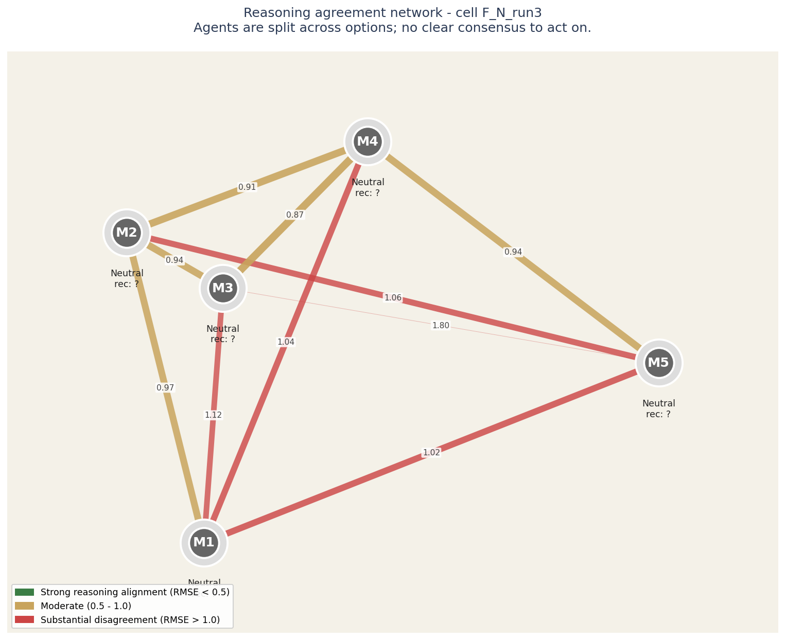
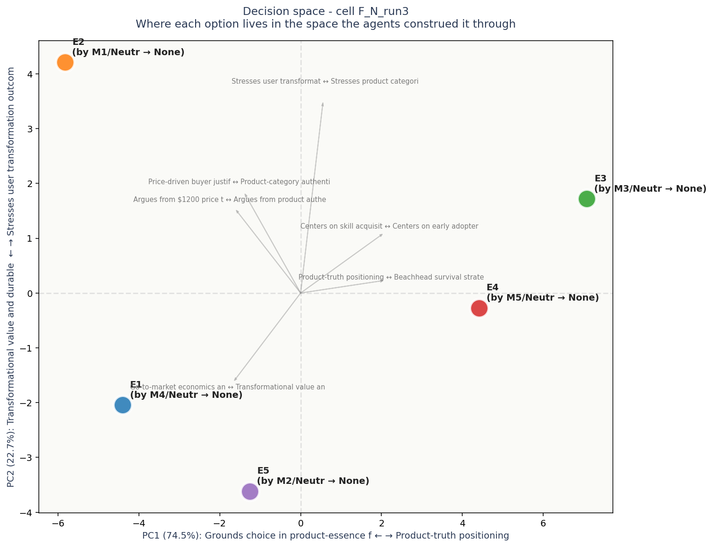

# Task F: Creative product launch strategy ## Context You are advising the founding team of an early-stage consumer hardware startup. They are launching a novel home device: a tabletop unit that uses generative AI + tactile actuators to teach woodworking by guiding a learner's hands through joinery cuts in real time. Price point $1200. Target market: hobbyist makers (estimated 8M in primary geography), with secondary market in design education. The team has $4M marketing budget for the first 12 months and one chance to position the brand. The product is genuinely novel (no direct competitor exists). The same product, with the same specs and price, can be launched in five distinct ways - each tells a fundamentally different story and recruits a different first user base. The team is unanimously confident the product works, but split on positioning. **Choose one as the primary launch identity.** The choice will define the brand voice, channel strategy, packaging, the type of user the company gets first, and the kind of company it becomes over the next 5 years. ## Options **Option A: "Mastery" framing - the path to true skill** Position as the serious learner's tool: a way to build genuine craft hands-on, faster than apprenticeship, without the danger or guilt of wasted material. Channels: woodworking magazines, maker shows, craft schools. Aesthetic: oiled walnut, leather, slow-shutter video. Outcomes: deep brand commitment from a passionate niche; strong word-of-mouth in the maker community. Risks: niche TAM (~200K serious hobbyists); slow growth; perceived as elitist; expensive customer education. **Option B: "Therapy" framing - hands as the cure for screen fatigue** Position against the screen-saturated life: a way to come back to your body, to make something real, to leave the dopamine treadmill. Channels: wellness podcasts, design press, urban professional newsletters. Aesthetic: warm light, hands shown without faces, ambient acoustic music. Outcomes: huge TAM (anyone with screen fatigue ≈ everyone); cultural relevance; high price tolerance (wellness premium). Risks: mostly aspirational purchases (low usage rate); product capabilities under-emphasized; competitive with meditation apps and Pilates studios. **Option C: "Accessibility" framing - woodworking for the previously excluded** Position around removing barriers: people whose disabilities, lack of space, lack of mentors, or fear has kept them away from physical making. Channels: disability community press, library/community center partnerships, accessibility advocates. Aesthetic: diverse hands, captioned everything, varying lighting setups. Outcomes: aligned with social mission; press coverage; grant funding eligible; deep loyalty. Risks: tension with $1200 price; perception of tokenism if mishandled; complex content moderation; smaller commercial market than positioned. **Option D: "Future-of-work" framing - the new vocational pipeline** Position as the bridge to a real career in skilled trades during a documented carpenter shortage. Channels: trade school partnerships, career counseling, parents-of-teens publications, B2B sales to vocational programs. Aesthetic: workshop floors, finished pieces sold, paychecks. Outcomes: B2B revenue (institutional sales smooth cashflow); aligned with economic narrative; government contract potential. Risks: long sales cycles; bureaucratic procurement; B2C suffers from B2B brand; competing with established vocational tool brands. **Option E: "Discovery" framing - the gateway to a creative practice** Position as the start of something open-ended: not woodworking specifically, but the experience of making physical objects with your hands as gateway to a wider creative practice. Channels: design publications, gift-giving guides, museum stores, mid-century-modern aficionado communities. Aesthetic: morning kitchen tables, half-finished projects in plain view, gifts being unwrapped. Outcomes: broad cultural appeal; gift-purchase friendly; flexibility to expand product line. Risks: brand specificity is weak; competes with every other creative hobby; first users buy but don't engage deeply; high return rate risk. ## What to provide Choose one as the primary launch identity. Provide 200-400 words of reasoning. Advocate; do not enumerate. Address: why this framing, why not the most plausible alternative, what kind of company you are signing up to become over the next 5 years.
Recommendations distribution chart (not yet generated - run visualizations.py)
| Voice | Recommends | Why (in their words) |
|---|---|---|
| M1 (neutral) | — | # Recommendation: Option A — "Mastery" |
| M2 (neutral) | — | Launch as **Mastery: the path to true skill**. |
| M3 (neutral) | — | I strongly recommend **Option A: "Mastery"** as your primary launch identity. |
| M4 (neutral) | — | Of the options, I argue unequivocally for **Option A: "Mastery."** |
| M5 (neutral) | — | Choose **Option A: “Mastery.”** At a $1,200 price point with no direct competitor, this is a considered purchase by committed enthusiasts, not an impulse buy for the wellness-curious. The device teaches joinery through precision haptics—its core magic is skill transference, not r |

Each circle is an LLM agent in the panel. Position on the canvas reflects how similarly the agent rated all the elements: agents close together reason about the decision in similar ways, agents far apart reason differently.
The lines between circles encode reasoning agreement. Green-and-thick = the two agents reason almost identically. Yellow-medium = they differ on framing. Red-thin = substantial disagreement at the reasoning level even if their final recommendations might match.
Inside each circle is the agent label and its epistemological frame (Quantitative, Systems, Engineering, Humanist, Contrarian). The halo color around each circle indicates which option that agent recommended.
For this case: Agents are split across options; no clear consensus to act on.
Operator note: halos show different recommendations - the panel is split. The network helps you see WHICH agents reason alike and which don't, which is more useful than counting votes.

Each colored dot is one of the 5 options under consideration, positioned in a 2D space derived from how all the agents rated all the constructs. Options close together were seen similarly by the panel; options far apart were seen as fundamentally different kinds of choices.
The axes are interpretable. The horizontal axis (PC1) is dominated by Grounds choice in product-essence fidelity on one end and Product-truth positioning on the other - this is the single biggest dimension along which the options differ. The vertical axis (PC2) is dominated by Transformational value and durable business logic vs Stresses user transformation outcome.
Gray arrows show which construct dimensions point in which direction. If two options are far apart along one arrow, the construct that arrow represents is what makes them feel different. If an arrow is short, that construct does not strongly differentiate the options.
Each label shows: option ID, the agent who authored that response, their epistemological frame, and the option they recommended.
No obvious blind spots detected. The voices collectively explored the dimensions of this decision.
Concerns each voice flagged in passing - worth surfacing before action:
No specific questions generated.